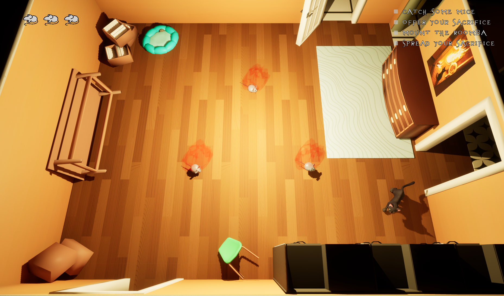
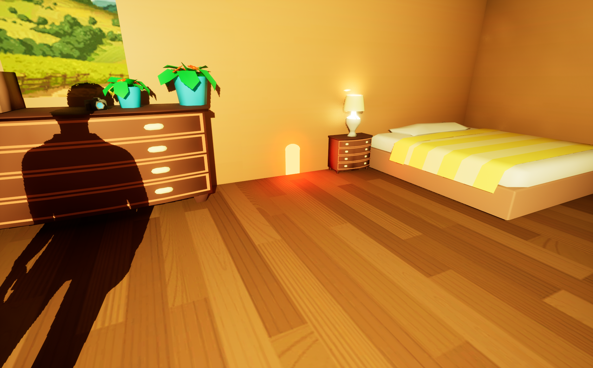
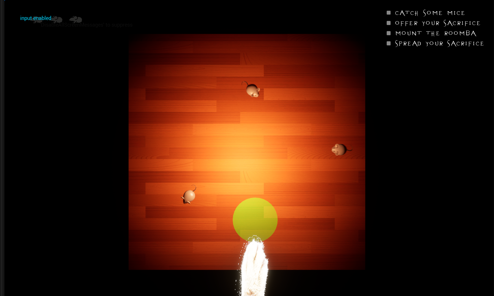
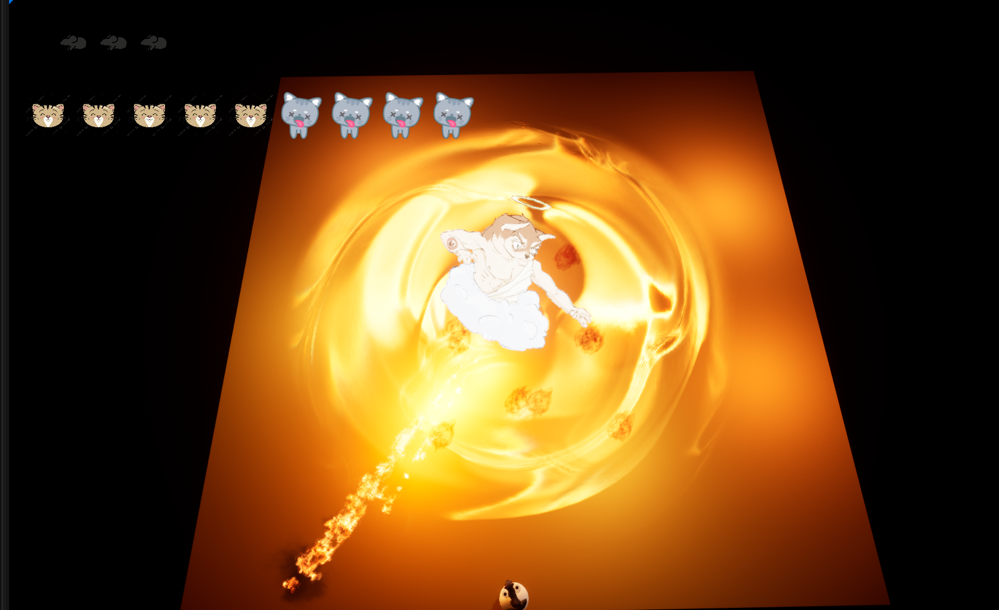

The game jam's theme was "Spread it". We wanted to do something less traditional as there were over 30 groups participating. In the end we decided on a stealth game where you play as a cat on a secret mission. Catch some mice and sacrifice them to form a pentagram, an offering to your evil cat god! But beware the cleaning lady trying to put a stop to your shennanigans. 
If you sacrifice enough mice you are met with an unexpected turn as god intervenes to stop you, defeat him and claim your seat as an apostle of cat Satan.
We made this game within two days and half with a team of seven, including three programmers, one artist, one Game Designer, one VFX and one sound design. Though we placed decently in the competition, we quickly found many improvements we could bring to the game. It was both a fun and insightful experience, as we learned what to do and what to avoid in future experiences!
Video Demo
What did I do?
For this project, I was in charge of the big picture, making all the pieces connect together. More precisely, I worked on:
- Game Loop
- Mice Minigame and Mice AI
- Transitions between Levels
- Winning Conditions, Mice Placements, and Pentagram Logic
- Boss Attacks (not the AI)
- UI, Widgets, and Menus
As I was in charge of how the player interacted with the game and the world within, I aimed for a seamless experience. One where the player remains immersed while building suspense and without having to stop and think, "Now what?" This was achieved through smooth transitions and the interactions with the world.  
As for the minigame itself, I wanted it to be simple and intuitive, so I chose a whack-a-mole-style concept.
Next came the interaction with the pentagrams, again using trigger colliders but this time automated, as we wanted to avoid repetitiveness. We considered ideas like placing the mice and grinding them by hovering over them with the Roomba, though that was ultimately discarded.
 With all that in place, it was time to implement the UI, transitions and the game loop with win and lose conditions. And with that, the game was ready. Or was it?
With all that in place, it was time to implement the UI, transitions and the game loop with win and lose conditions. And with that, the game was ready. Or was it?

This game jam was quite a fun experience and taught us a lot. I won't take you through the whole process, as it was a group effort, but we three programmers thought we could improve on it!
We made a few mistakes, and the very limited time constraint didn't allow us to fix them. However, that turned into a valuable learning experience. Some of the areas to improve the game are:
- The pacing of the game is not balanced quite right. The player is too fast, and the stealth element doesn't shine through.
- The pacing of the mice minigame is also too fast. Not allowing players to exit empty holes breaks immersion and kills momentum.
- Tied to the first point, the Cleaning Lady is too slow, not threatening enough, and the map doesn't offer enough hiding opportunities.
- The Boss Level altogether, although we were told it was memorable, took too much time that we should've spent on polish instead.
We're happy with what we delivered, and while we can always spot ways to level it up in hindsight, that's part of the process. Especially with only a few days to do it! The three of us discussed how to fix those issues and came up with:
- Slowing down the player, increasing the Cleaning Lady's speed, and keeping the Roomba's momentum but making it produce noise when driven, attracting attention. We'd also give it slipperier controls to allow for high-risk, high-reward plays.
- I came up with an extension to the minigame, making it longer and a bit more difficult while keeping it engaging. Along with the ability to leave at any time, the Cleaning Lady wouldn't be paused anymore, and sound cues would alert the player of her approach.
All this made choosing when to enter a mice hole more important and tactical. (Although all this was added and is on GitHub, no version of the game with it was ever published.) - We decided to add a second Cleaning Lady and change the furniture layout to give the player more opportunities to hide and sneak around. As mentionned before the Cleaning Lady would no longer pause, allowing her to catch you in the act, kicking you out of the mice hole and triggering a chase.
- This one was more of a lesson learned. We should have focused on other aspects of the game and ended it after completing the pentagram. That being said, the boss fight feels underwhelming, and there are many things we could add to make it more engaging.
Regardless of the issues we faced, we had fun and learned a lot. The game is still fun experience, but with a bit of reflection, we can definitely bring out its core mechanic and make it much more enjoyable!
If you want to read more about it feel free to check out the Github page and Itch page. You can also download the game on Itch or dowload the code from github to see the latest improvements we were working on mentionned previously!